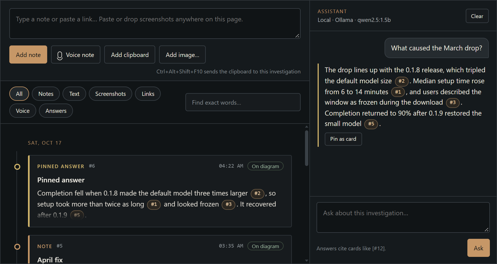
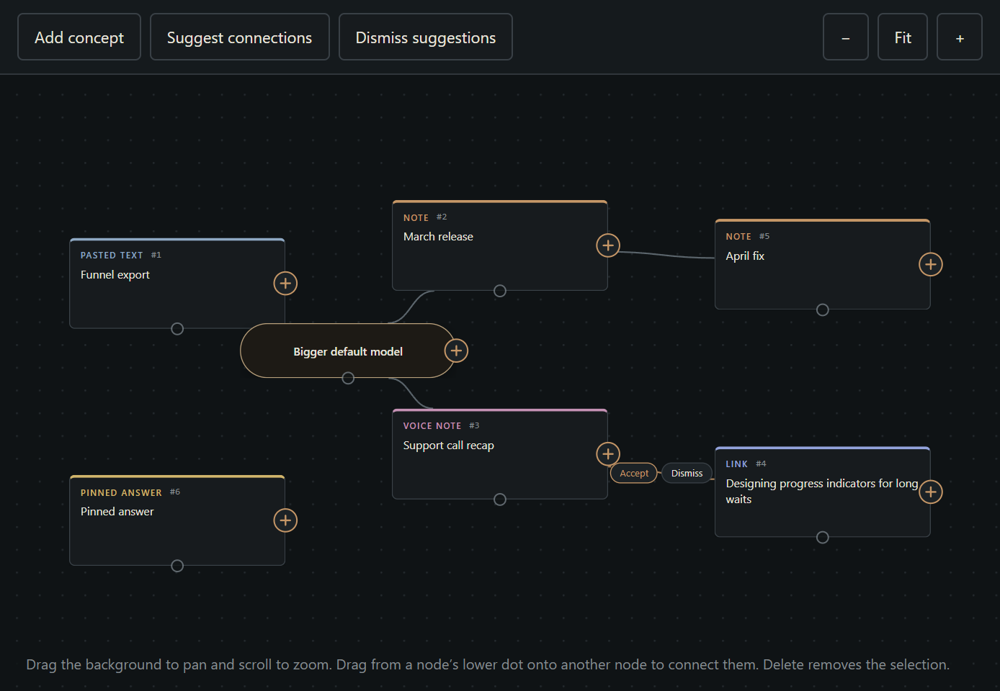

Investigations
Everything about one question, in one place.
Cardskept until you delete them
Chronology or diagramconnect cards and concepts
Cited answersevery claim points to a card, like [#3]

Chronology with the assistant citing cards

Diagram with a suggested connection to accept or dismiss